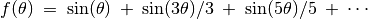

Analyse de Fourier¶
Objectif
Étudier la transformée de Fourier d’un signal. Représentations temporelle et fréquentielle d’un signal.
Procédure
- Connecter SQ1 à A1 et WG à A2. Mettre A1 en mode couplage alternatif (interrupteur à glissière sur le boîtier)
- Activer A1 et A2, sélectionner le calibre 4 V
- Régler WG et SQ1 à 500 Hz
- Cliquer sur le bouton FFT
Discussion
Dans le graphique de la transformée de Fourier, la fréquence est sur l’axe x et l’axe y montre l’intensité relative des composants fréquentiels du signal. On appelle ça la représentation fréquentielle (http://en.wikipedia.org/wiki/Fourier_transform). Dans le cas du signal sinusoïdal il y a un seul pic dominant, les pics plus petits sont une mesure de la distorsion du signal sinusoïdal.
Un signal carré peut être représenté comme . Dans la transformée de Fourier d’un signal carré de fréquence f , il y aura un composant 3 f (dont l’amplitude est le tiers du composant f), un composant 5 f (amplitude un cinquième), etc. comme montré sur la figure.